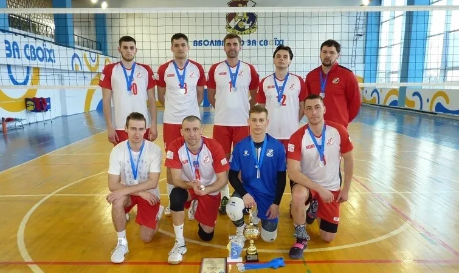

МСК«Дніпро»-ЧІПБ володар Кубку Черкас з волейболу серед чоловіків
Матчами фінального етапу фінішував відкритий Кубок м.Черкаси з волейболу серед чоловіків – 2024.
У першій півфінальній грі зустрілися «Азот” Черкаси та «Dark Side» Черкаси, яка видалася інтригуючою та напруженою, де лідери в грі змінювались з перемінним успіхом, але в підсумку переможцем півфіналу стала команда «Азот» – 3:1 (26-28, 25-19, 28-26, 25-20).
Друга півфінальна гра між командами МСК «Дніпро»-ЧІПБ Черкаси та «Авіатор» Кременчук видалась не менш напруженою ніж перший півфінал. В підсумку перемогу в грі здобула команда МСК «Дніпро»-ЧІПБ – 3:1 (23-25, 25-13, 25-16, 25-13).
Фінальний матч – МСК «Дніпро»-ЧІПБ – «Азот» – 3:0 (25-16, 25-19, 25-14).
Кращим гравцем (MVP) фінальної гри став Олександр Гребенюк (МСК «Дніпро»-ЧІПБ).
Організаторами змагань традиційно були ГО “Федерація волейболу Черкащини”, Черкаська обласна організація ФСТ “Спартак” та департамент освіти та гуманітарної політики Черкаської міської ради.